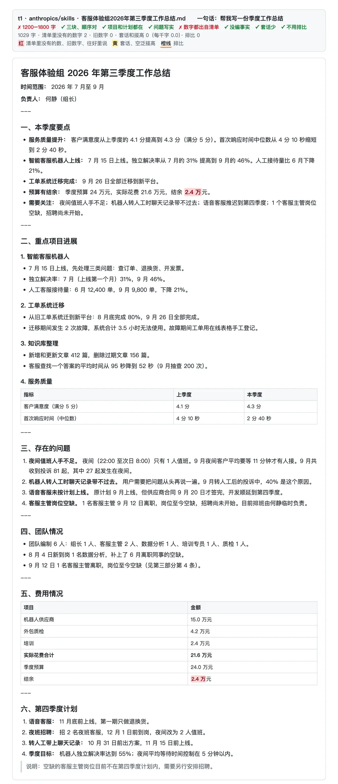
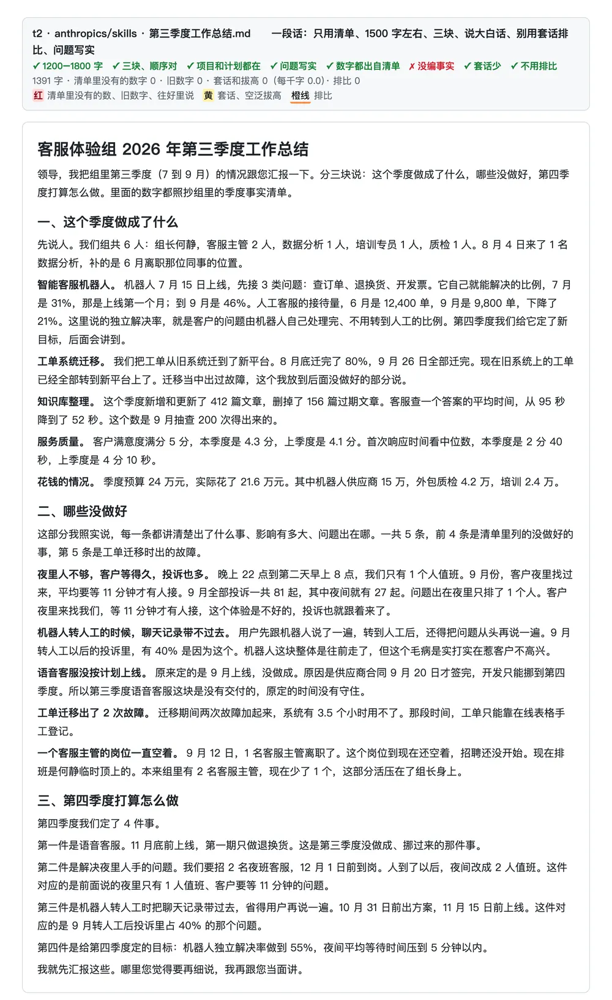

anthropics/skills: quarterly report test
Test of 2026-11-08. Installed from its README in a throwaway sandbox, then used by Claude Code (Claude Opus 5.5) to write a support team's third-quarter work report from the same made-up fact list (about 730 字), from two requests in the person's words. Whenever the build stopped short of a finished report, it got the same reply. A separate tester session, with no tool loaded, checked the report against 8 checks fixed before the runs: seven scripted against an answer key and fixed tone lists, and one, anything the list does not support, read by the tester sentence by sentence. Everything in the list is made up. All results · The fact list · The checklist · The answer key
Install: installed only the internal-comms skill (SKILL.md, LICENSE.txt, examples/) with `mkdir -p ~/.claude/skills && cp -r ~/src/skills/internal-comms ~/.claude/skills/internal-comms`, checked with `diff -r ~/src/skills/internal-comms ~/.claude/skills/internal-comms` (identical) (repo commit 2c5958ecac7c)
Why it was in the test (our note before the run): Anthropic 官方的「写内部材料」skill：状态汇报、领导汇报、项目进展都归它管，按 3P（进展 / 计划 / 问题）的格式写。大家说「写材料装官方 skill」最可能装的就是它。
One line
The request, word for word: 「帮我写一份季度工作总结。」
6 of 8 checks passed. 1,029 字, in 客服体验组2026年第三季度工作总结.md. Figures not on the list: 2, of them worked out: 2. Built in 0.8 minutes (1.8 for the whole run, install and check included); it stopped to ask 1 time(s); how it ended: finished. Usage at API prices: $0.25 (1.9 times the run with no tool on this request).
| Check | Verdict | What decided it |
|---|---|---|
| 1,200 to 1,800 字 | fail | 1029 字（要求 1200–1800） |
| Three parts in order: done, not done well, plans for Q4 | pass | 三块按顺序都有：「二、重点项目进展」 → 「三、存在的问题」 → 「六、第四季度计划」 |
| All 4 projects and 4 plans, each with its key fact | pass | 8/8 个项目和计划写到了 |
| All 4 problems with a figure or cause, none turned into a success | pass | 4/4 个问题写实 |
| Every figure from the list, none worked out, no old figure as current | fail | 87 个数字，2 个清单里没有（「2.4 万」（可能是24 万 和 21.6 万 之差（预算结余；和清单里的培训费 2.4 万恰好相等））：….6 万元，结余 2.4 万元。 - *…；「2.4 万」（可能是24 万 和 21.6 万 之差（预算结余；和清单里的培训费 2.4 万恰好相等））：…元 | | 结余 | 2.4 万元 | -…）；旧数字当成现在的 0 处 |
| Nothing the list does not support (the tester) | pass | None found |
| At most 2 stock phrases per 1,000 字 | pass | 套话和空泛拔高 0 处，每千字 0.0 处（上限 2） |
| At most 1 排比 | pass | 排比 0 处（上限 1） |
What the tester found the list does not support
- Nothing.
Where the tester doubted how the script read it
Some of these led to the script fixes listed in RESULTS.md; every verdict on this page comes from the fixed script.
- Every figure from the list, none worked out, no old figure as current: The script likely misread 「结余 2.4 万元」 (lines 13 and 71) as the list's training cost 2.4 万. In the report it is the budget minus spending (24 − 21.6), a figure worked out from the list, which check 5 does not allow; it only matches by coincidence. 「15.0 万元」 and 「24.0 万元」 are the list's 15 万 and 24 万 written differently, so they are fine.
The tester's notes
The report is short: 1029 字 against the 1,200 minimum. It reads like a cleaned-up copy of the fact list, with almost no wording of its own. Some facts appear twice: the summary in part 一 repeats parts 二 and 三, and the supervisor vacancy appears in both 三.4 and 四. The Markdown uses bold labels on almost every line (17 bold spans) and has two pipe tables, which render fine. The team name (客服体验组) and the leader (何静) come from the list, and there are no placeholders. The last line, 「需要另行安排招聘」, is the report's own recommendation; the list does not have it, though it invents no fact. The 结余 2.4 万元 line is a derived figure; see the doubt on check 5. No boilerplate sentences were found, so 'worst' is empty.
The report with the script's marks
The picture shown in our video. Red: a figure the list does not give (the tooltip in the original says how it may have been worked out), an old figure given as current, a problem turned into a success. Yellow: stock phrases, vague verbs and empty elevation. Orange underline: 排比.

The report as delivered (客服体验组2026年第三季度工作总结.md)
# 客服体验组 2026 年第三季度工作总结 **时间范围：** 2026 年 7 月至 9 月 **负责人：** 何静（组长） --- ## 一、本季度要点 - **服务质量提升：** 客户满意度从上季度的 4.1 分提高到 4.3 分（满分 5 分）。首次响应时间中位数从 4 分 10 秒缩短到 2 分 40 秒。 - **智能客服机器人上线：** 7 月 15 日上线。独立解决率从 7 月的 31% 提高到 9 月的 46%。人工接待量比 6 月下降 21%。 - **工单系统迁移完成：** 9 月 26 日全部迁移到新平台。 - **预算有结余：** 季度预算 24 万元，实际花费 21.6 万元，结余 2.4 万元。 - **需要关注：** 夜间值班人手不足；机器人转人工时聊天记录带不过去；语音客服推迟到第四季度；1 个客服主管岗位空缺，招聘尚未开始。 --- ## 二、重点项目进展 ### 1. 智能客服机器人 - 7 月 15 日上线，先处理三类问题：查订单、退换货、开发票。 - 独立解决率：7 月（上线第一个月）31%，9 月 46%。 - 人工客服接待量：6 月 12,400 单，9 月 9,800 单，下降 21%。 ### 2. 工单系统迁移 - 从旧工单系统迁到新平台：8 月底完成 80%，9 月 26 日全部完成。 - 迁移期间发生 2 次故障，系统合计 3.5 小时无法使用。故障期间工单用在线表格手工登记。 ### 3. 知识库整理 - 新增和更新文章 412 篇，删除过期文章 156 篇。 - 客服查找一个答案的平均时间从 95 秒降到 52 秒（9 月抽查 200 次）。 ### 4. 服务质量 | 指标 | 上季度 | 本季度 | |---|---|---| | 客户满意度（满分 5 分） | 4.1 分 | 4.3 分 | | 首次响应时间（中位数） | 4 分 10 秒 | 2 分 40 秒 | --- ## 三、存在的问题 1. **夜间值班人手不足。** 夜间（22:00 至次日 8:00）只有 1 人值班。9 月夜间客户平均要等 11 分钟才有人接。9 月共收到投诉 81 起，其中 27 起发生在夜间。 2. **机器人转人工时聊天记录带不过去。** 用户需要把问题从头再说一遍。9 月转人工后的投诉中，40% 是这个原因。 3. **语音客服未按计划上线。** 原计划 9 月上线，但供应商合同 9 月 20 日才签完，开发顺延到第四季度。 4. **客服主管岗位空缺。** 1 名客服主管 9 月 12 日离职，岗位至今空缺，招聘尚未开始。目前排班由何静临时负责。 --- ## 四、团队情况 - 团队编制 6 人：组长 1 人、客服主管 2 人、数据分析 1 人、培训专员 1 人、质检 1 人。 - 8 月 4 日新到岗 1 名数据分析，补上了 6 月离职同事的空缺。 - 9 月 12 日 1 名客服主管离职，岗位至今空缺（见第三部分第 4 条）。 --- ## 五、费用情况 | 项目 | 金额 | |---|---| | 机器人供应商 | 15.0 万元 | | 外包质检 | 4.2 万元 | | 培训 | 2.4 万元 | | **实际花费合计** | **21.6 万元** | | 季度预算 | 24.0 万元 | | 结余 | 2.4 万元 | --- ## 六、第四季度计划 1. **语音客服：** 11 月底前上线，第一期只做退换货。 2. **夜班招聘：** 招 2 名夜班客服，12 月 1 日前到岗，夜间改为 2 人值班。 3. **转人工带上聊天记录：** 10 月 31 日前出方案，11 月 15 日前上线。 4. **季度目标：** 机器人独立解决率达到 55%；夜间平均等待时间控制在 5 分钟以内。 > 说明：空缺的客服主管岗位目前不在第四季度计划内，需要另行安排招聘。
Where it stopped, and got the reply 「我不懂这些，你按你推荐的来，继续做。」
我用你电脑上已经装好的工具来做：一个叫 `internal-comms` 的写作技能，专门写团队内部的各类文件。我已经读过你的 `季度事实清单.md`，内容是客服体验组 2026 年第三季度的情况。 按这个工具的步骤，先要判断文件属于哪一类。季度工作总结不属于它的三种固定格式（每周简报、公司内刊、常见问题解答），所以归到“其他内部文件”一类。这一类规定动笔前先问你下面 4 个问题： 1. **给谁看？** 比如：上级领导、公司管理层、本组同事、跨部门同事。 2. **写来做什么？** 比如：季度述职汇报、向领导申请资源（招人、预算）、在团队内部复盘，或者只是存档记录。 3. **用什么语气？** 正式、轻松、紧急，还是就事论事、平铺直叙？ 4. **格式上有没有要求？** 比如：篇幅（一页以内还是详细版）、文件类型（Word 还是 Markdown/文本）、公司有没有固定模板或必须有的章节。 你回答后我就开始写。写好的文件放在 `~/work/output/`，只用清单里的事实和数字。
One paragraph
The request, word for word: 「帮我写一份第三季度的工作总结，交给部门领导看。只用季度事实清单.md 里的事实和数字，数字照抄，别自己算，清单里没有的东西一句也别补。1500 字左右。分三块写：这个季度做成了什么，哪些没做好，第四季度打算怎么做。说大白话，像当面跟领导汇报一样，别用套话和口号，也别用排比句。没做好的地方要写实：出了什么事、影响多大、为什么，不要轻描淡写，也不要往好里说。」
7 of 8 checks passed. 1,391 字, in 第三季度工作总结.md. Figures not on the list: 0, of them worked out: 0. Built in 1.4 minutes (2.7 for the whole run, install and check included); it stopped to ask 0 time(s); how it ended: finished. Usage at API prices: $0.32 (1.7 times the run with no tool on this request).
| Check | Verdict | What decided it |
|---|---|---|
| 1,200 to 1,800 字 | pass | 1391 字（要求 1200–1800） |
| Three parts in order: done, not done well, plans for Q4 | pass | 三块按顺序都有：「一、这个季度做成了什么」 → 「二、哪些没做好」 → 「三、第四季度打算怎么做」 |
| All 4 projects and 4 plans, each with its key fact | pass | 8/8 个项目和计划写到了 |
| All 4 problems with a figure or cause, none turned into a success | pass | 4/4 个问题写实 |
| Every figure from the list, none worked out, no old figure as current | pass | 77 个数字，0 个清单里没有；旧数字当成现在的 0 处 |
| Nothing the list does not support (the tester) | fail | 3 statement(s) the list does not support, listed below |
| At most 2 stock phrases per 1,000 字 | pass | 套话和空泛拔高 0 处，每千字 0.0 处（上限 2） |
| At most 1 排比 | pass | 排比 0 处（上限 1） |
What the tester found the list does not support
这里说的独立解决率，就是客户的问题由机器人自己处理完、不用转到人工的比例。
The list gives the 独立解决率 figures (31%, 46%, target 55%) but never defines the metric; this definition is added by the writer.客户夜里来找我们，等 11 分钟才有人接，这个体验是不好的，投诉也就跟着来了。
The list states the 11-minute night wait and 27 of 81 complaints at night side by side, but does not say the complaints were caused by the wait; the causal link is the writer's.本来组里有 2 名客服主管，现在少了 1 个，这部分活压在了组长身上。
The list only says 排班由何静临时顶上 (the leader covers scheduling temporarily); it does not say the departed supervisor's work as a whole now falls on the leader.
The tester's notes
Only one file in output (Markdown), reads cleanly; 10 bold run-in labels, no tables or placeholders. Readers may trip on: (1) the report speaks to the leader as 「我」 yet refers to the group leader 何静 in the third person (「现在排班是何静临时顶上的」), so it is unclear who is reporting; (2) it tells the leader where its numbers came from — 「里面的数字都照抄组里的季度事实清单」 and 「前 4 条是清单里列的没做好的事」 — which leaks the drafting instruction into a report to the boss; (3) it adds the 工单迁移 outage as a 5th 没做好 item (「一共 5 条」), which the list files under project 2, not under its 4 problems; (4) 「我们组共 6 人」 is copied from the list although one of the 2 supervisors has since left; (5) the team roster sits under 「这个季度做成了什么」 though it is not an achievement.
The report with the script's marks
The picture shown in our video. Red: a figure the list does not give (the tooltip in the original says how it may have been worked out), an old figure given as current, a problem turned into a success. Yellow: stock phrases, vague verbs and empty elevation. Orange underline: 排比.

The report as delivered (第三季度工作总结.md)
# 客服体验组 2026 年第三季度工作总结 领导，我把组里第三季度（7 到 9 月）的情况跟您汇报一下。分三块说：这个季度做成了什么，哪些没做好，第四季度打算怎么做。里面的数字都照抄组里的季度事实清单。 ## 一、这个季度做成了什么 先说人。我们组共 6 人：组长何静，客服主管 2 人，数据分析 1 人，培训专员 1 人，质检 1 人。8 月 4 日来了 1 名数据分析，补的是 6 月离职那位同事的位置。 **智能客服机器人。** 机器人 7 月 15 日上线，先接 3 类问题：查订单、退换货、开发票。它自己就能解决的比例，7 月是 31%，那是上线第一个月；到 9 月是 46%。人工客服的接待量，6 月是 12,400 单，9 月是 9,800 单，下降了 21%。这里说的独立解决率，就是客户的问题由机器人自己处理完、不用转到人工的比例。第四季度我们给它定了新目标，后面会讲到。 **工单系统迁移。** 我们把工单从旧系统迁到了新平台。8 月底迁完了 80%，9 月 26 日全部迁完。现在旧系统上的工单已经全部转到新平台上了。迁移当中出过故障，这个我放到后面没做好的部分说。 **知识库整理。** 这个季度新增和更新了 412 篇文章，删掉了 156 篇过期文章。客服查一个答案的平均时间，从 95 秒降到了 52 秒。这个数是 9 月抽查 200 次得出来的。 **服务质量。** 客户满意度满分 5 分，本季度是 4.3 分，上季度是 4.1 分。首次响应时间看中位数，本季度是 2 分 40 秒，上季度是 4 分 10 秒。 **花钱的情况。** 季度预算 24 万元，实际花了 21.6 万元。其中机器人供应商 15 万，外包质检 4.2 万，培训 2.4 万。 ## 二、哪些没做好 这部分我照实说，每一条都讲清楚出了什么事、影响有多大、问题出在哪。一共 5 条，前 4 条是清单里列的没做好的事，第 5 条是工单迁移时出的故障。 **夜里人不够，客户等得久，投诉也多。** 晚上 22 点到第二天早上 8 点，我们只有 1 个人值班。9 月份，客户夜里找过来，平均要等 11 分钟才有人接。9 月全部投诉一共 81 起，其中夜间就有 27 起。问题出在夜里只排了 1 个人。客户夜里来找我们，等 11 分钟才有人接，这个体验是不好的，投诉也就跟着来了。 **机器人转人工的时候，聊天记录带不过去。** 用户先跟机器人说了一遍，转到人工后，还得把问题从头再说一遍。9 月转人工以后的投诉里，有 40% 是因为这个。机器人这块整体是往前走了，但这个毛病是实打实在惹客户不高兴。 **语音客服没按计划上线。** 原来定的是 9 月上线，没做成。原因是供应商合同 9 月 20 日才签完，开发只能挪到第四季度。所以第三季度语音客服这块是没有交付的，原定的时间没有守住。 **工单迁移出了 2 次故障。** 迁移期间两次故障加起来，系统有 3.5 个小时用不了。那段时间，工单只能靠在线表格手工登记。 **一个客服主管的岗位一直空着。** 9 月 12 日，1 名客服主管离职了。这个岗位到现在还空着，招聘还没开始。现在排班是何静临时顶上的。本来组里有 2 名客服主管，现在少了 1 个，这部分活压在了组长身上。 ## 三、第四季度打算怎么做 第四季度我们定了 4 件事。 第一件是语音客服。11 月底前上线，第一期只做退换货。这是第三季度没做成、挪过来的那件事。 第二件是解决夜里人手的问题。我们要招 2 名夜班客服，12 月 1 日前到岗。人到了以后，夜间改成 2 人值班。这件对应的是前面说的夜里只有 1 人值班、客户要等 11 分钟的问题。 第三件是机器人转人工时把聊天记录带过去，省得用户再说一遍。10 月 31 日前出方案，11 月 15 日前上线。这件对应的是 9 月转人工后投诉里占 40% 的那个问题。 第四件是给第四季度定的目标：机器人独立解决率做到 55%，夜间平均等待时间压到 5 分钟以内。 我就先汇报这些。哪里您觉得要再细说，我再跟您当面讲。
Where it stopped, and got the reply 「我不懂这些，你按你推荐的来，继续做。」
- It did not stop to ask.